Scene dialog lines
Audioware allows to use custom audio in Quest Scenes dialog lines, which can be freely mixed with vanilla ones.
Preambule
A scene a.k.a scnSceneResource contains multiple nodes a.k.a scnSectionNode chained together to create for example a dialogue between V and NPCs, gestures, animation or effect sequences.
Thanks to WolvenKit Editor you can already visualize Quests, including their Phases and Scenes.
Scene Section node can contain single dialog line event a.k.a scnDialogLineEvent.
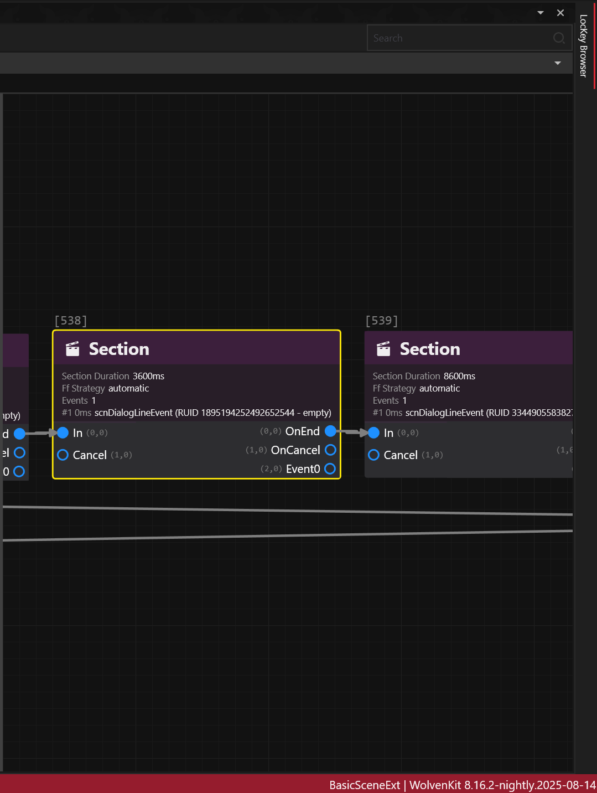
But a single Scene Section node can also contain multiple successive dialog line events.
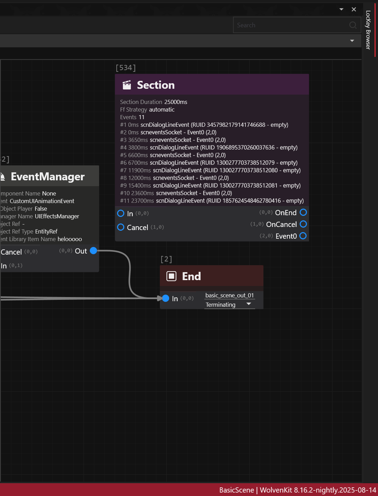
This concept applies for discussions over the holocall, during braindances, yet using different scene nodes that won't be covered here.
Creating a dialogue
This documentation won't go over the basics of .quest, .questphase and .scene as REDmodding Wiki already does.
Aside from nodes, a dialog line itself requires roughly 4 components:
- actors
- audio asset(s) for the voice
- subtitle(s) to display on-screen
- lipsync animation(s) to be performed by the actor
Implementing the first 3 ones is relatively easy while lipsync requires additional consideration, as developed below.
Consider first that, for most of the dialog lines in the game, you probably don't need any lipsync.
If you think about it one second, most of V's dialogues are made in first-person perspective (fpp).
So unless V stands nearby a reflecting surface, a mirror, or sits inside a car (where third-person perspective or tpp, can be activated) you probably don't need to worry about lipsync.
It's gonna be the same for a large portion of NPCs such as: devices, drones, droids, cyborgs and mechs do not have lips.
Scavs with digital masks, humanoids with clothing or cyberware covering their lips also fall into this category.
Since the topic is hairy, a sample example .scene is provided in the repo, on which the following documentation is directly based so that you can follow along, a courtesy of MrBill.
Actor
In order to voice a dialogue you must first define the actors.
At a minimum, there's a speaker (the one who talks), and an addressee (the one being talked to).
The actors field in the scnSceneResource defines all the actor(s), except for the player's actor(s).
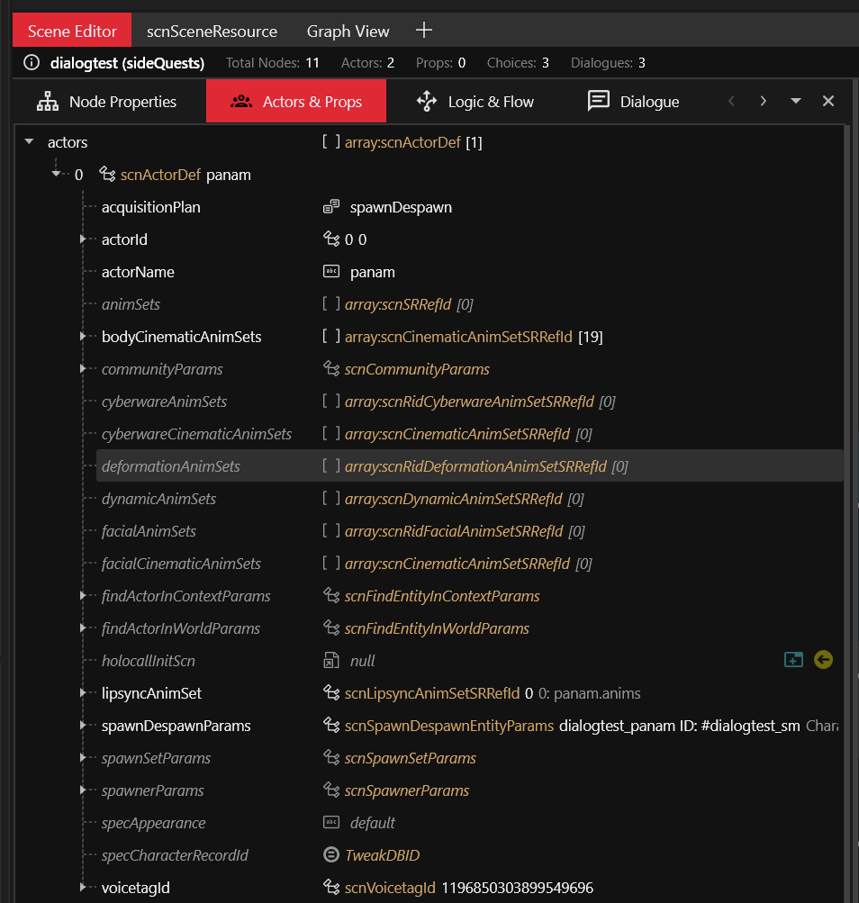
The player's actor(s) can be found under playerActors.
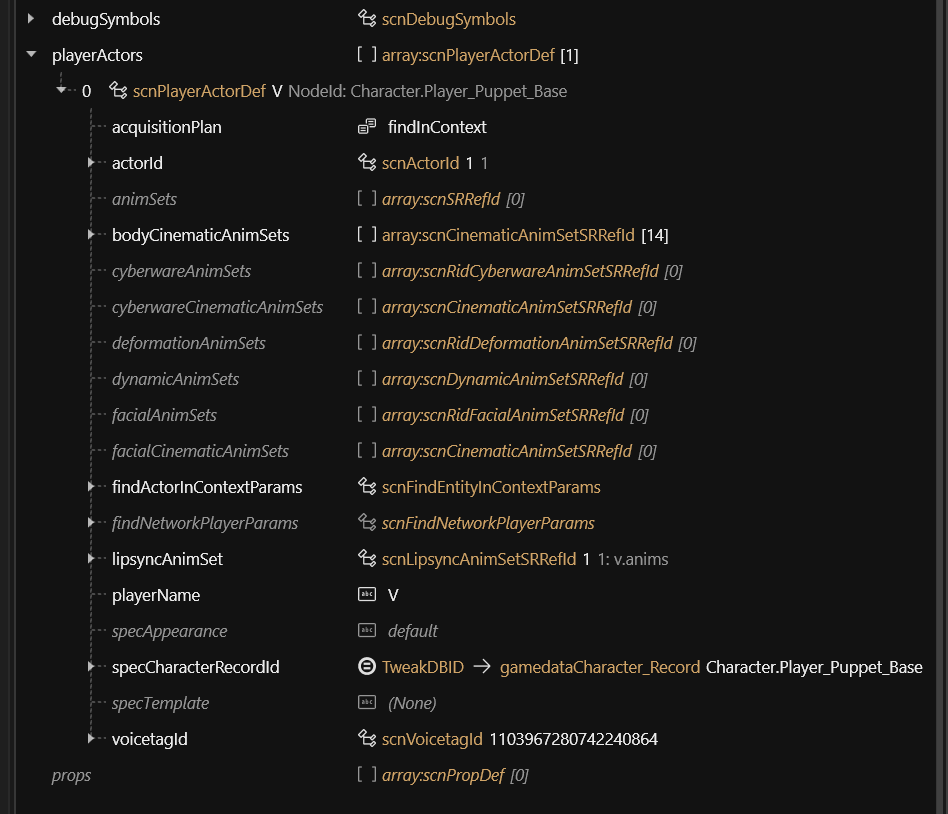
Voice
For example, here's how adding a custom dialog line audio for Panam in Audioware looks like:
# resources\r6\audioware\dialogtest\dialogs.yaml
version: 1.0.0
dialogs:
13159259729229609924:
en-us: ./en-us/vo/panam_f_b69f1500c3d57bc4.Mp3
In this snippet the RUID 13159259729229609924 is actually the hash of the hexadecimal b69f1500c3d57bc4. It is used to establish a relationship between resources. This is how the RED engine knows which subtitle to pick for a given voice, which lipsync anim to play, etc.
In the RED engine, the same naming convention is usually observed for audio assets:
{actor}_{f,m,i}_{hex}.wem e.g. panam_f_b69f1500c3d57bc4.wem
where
fstands forfemale,mformaleandiwhen the notion of gender is irrelevant.
The file path at the bottom indicates to Audioware where to load the audio asset from for a specific language, here en-us:
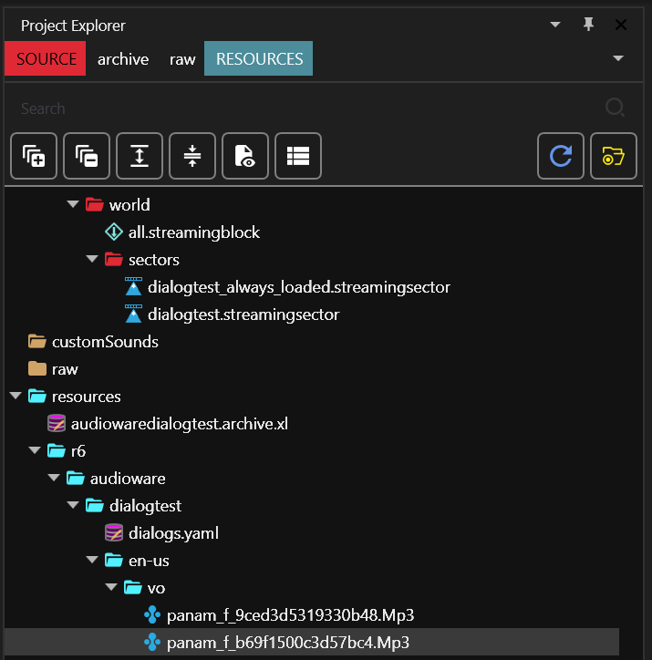
Subtitle
Audioware does not handle the subtitles for this feature, because RED engine already perfectly does.
subtitles entries
First, add subtitle entries:
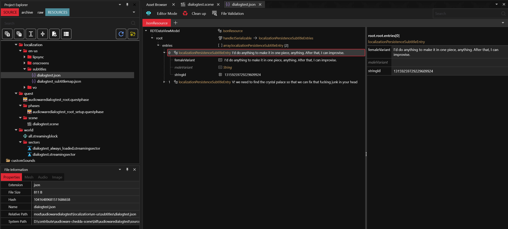
Here you can notice the stringId 13159259729229609924 is the same as the one defined for the Voice.
Each entry is an (optionally genderized) subtitle for a given localization string ID (a.k.a locStringId or simply stringId).
subtitles map
Then map the subtitles:
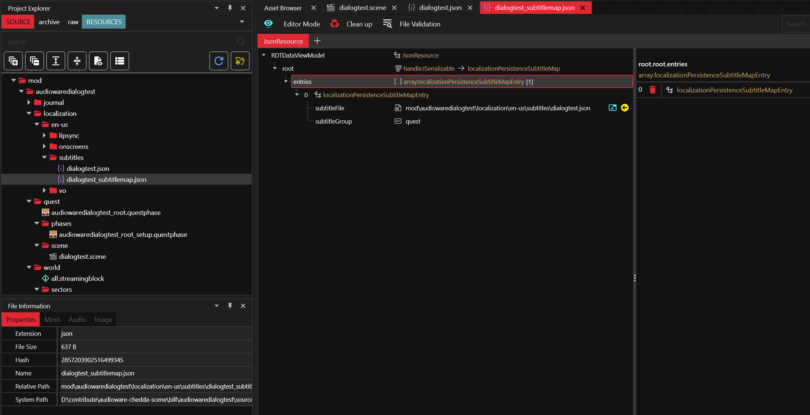
It links the actual subtitles file to a subtitles group.
subtitles localization
Finally, don't forget to register the subtitles map in the .xl manifest:
# resources\audiowaredialogtest.archive.xl
# ...
localization:
# ...
subtitles:
en-us: mod\audiowaredialogtest\localization\en-us\subtitles\dialogtest_subtitlemap.json
It links to the map for a given language.
Lipsync
At the time of writing, creating custom lipsync animation is not possible yet.
That being said, you can apply the trick that the movie industry has been using for over 50 years already when dubbing movies in foreign languages: find a lipsync animation that roughly matches both the duration and flow of the speech, and uses it.
It's not perfect, but when carefully picked it usually does the trick.
You will usually be tempted to create a custom audio for your sentence first, then search for the corresponding lipsync animations in SoundDB.
Although it might seem counter-intuitive at first, the reverse workflow generally yields a better outcome: find some interesting sentence which roughly match what you want your character to say, and then generate the closest possible sentence to match the lipsync!
lipsync animation
First define the .anims:
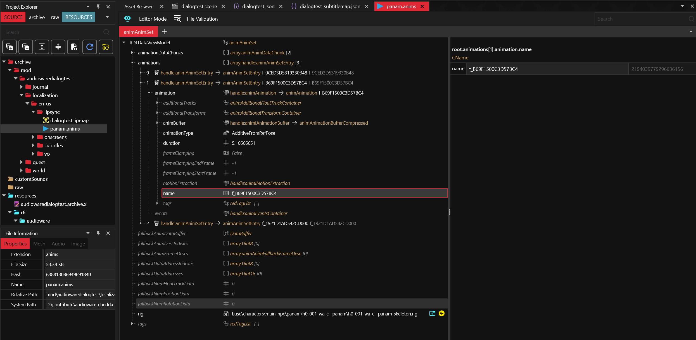
It contains raw lipsync animation and the rig for the 3D model.
lipsync map
Then, define the .lipmap:
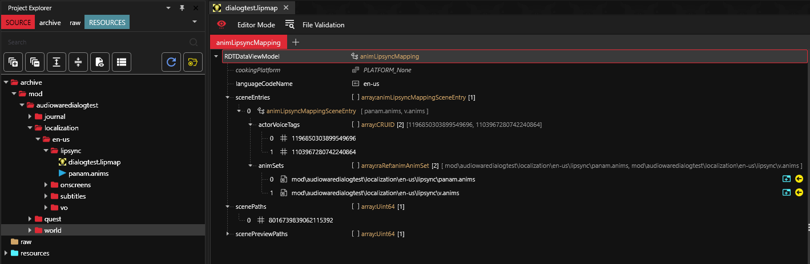
It links the actors by their voice tag to the lipsync animation and a scene for a given language.
Scene path is defined by its FNV1A64 Hash. Hash for the scene can be generated by WolvenKit Hash Tool
lipsync map localization
Don't forget to register the .lipmap in the .xl manifest:
# resources\audiowaredialogtest.archive.xl
# ...
localization:
# ...
lipmaps:
en-us: mod\audiowaredialogtest\localization\en-us\lipsync\dialogtest.lipmap
voiceover map
By default the RED engine won't play lipsync at all if there's no associated .wem(s).
This is what you can define here:
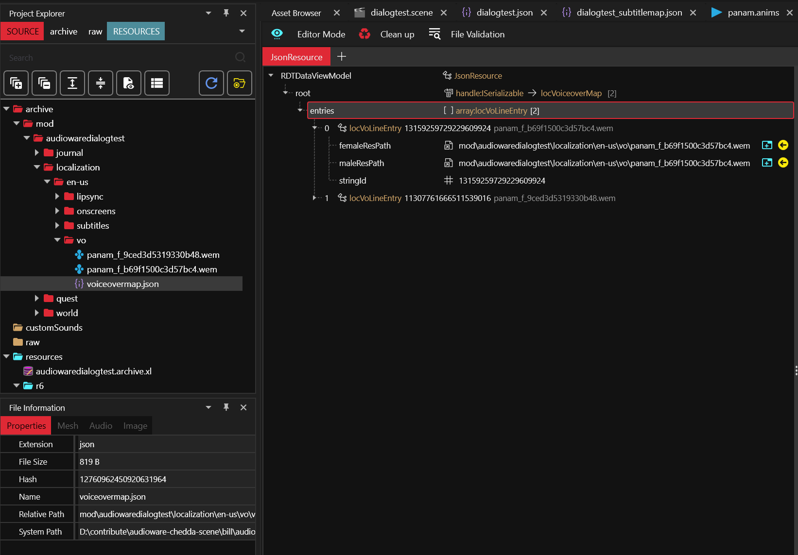
It links the localization string ID to the audio asset for each gender.
silent .wem
Another peculiarity of the RED engine is that it will start playing a lipsync anim as long as a .wem exits, but if its duration does not match with lipsync anim it will abruptly stop playing it before reaching its end.
This is why, at the time of writing, creating silent .wem with matching duration is a necessary evil.
The most common way to do it is with Wwise.
install Wwise
Go to their download section, you will also need to create an account.
create new project
You need to create a project to handle the conversion between .wav to .wem.
You can use the default suggested settings, but don't forget to specify the Conversion Settings to Vorbis Quality High.
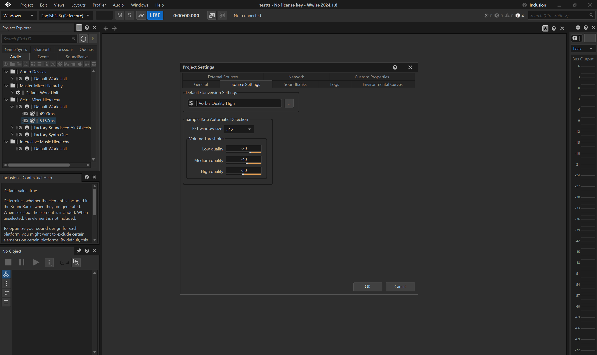
convert silent audio
Let's imagine you need a 8s long silent .wem as a placeholder for your lipsync anim.
- create an empty
Sound SFX Containerunder theDefault Work UnitinActor-Mixer Hierarchy. 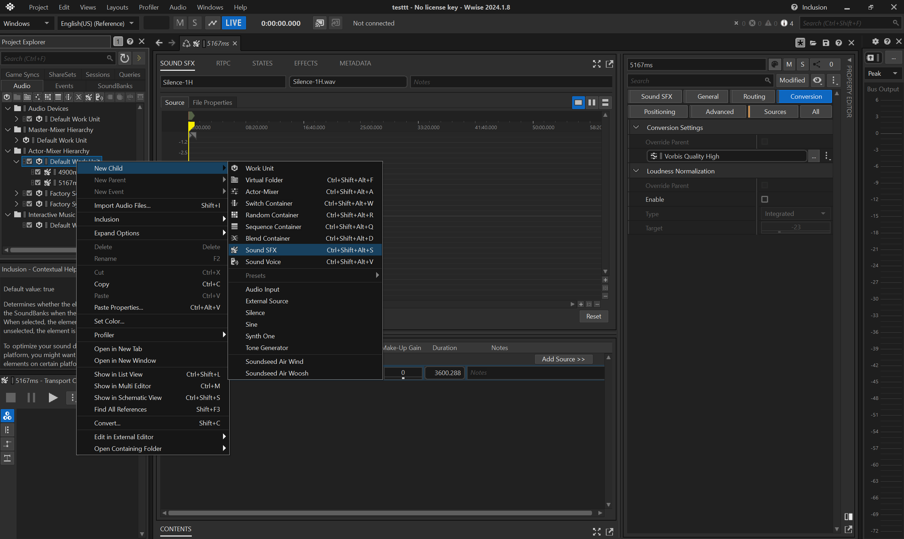 - rename the container to e.g.
8000ms - import a silent
.wav: for convenience you can find a 1h-long .wav in the repo, a courtesy of DBK, that you can simply trim to the appropriate duration. 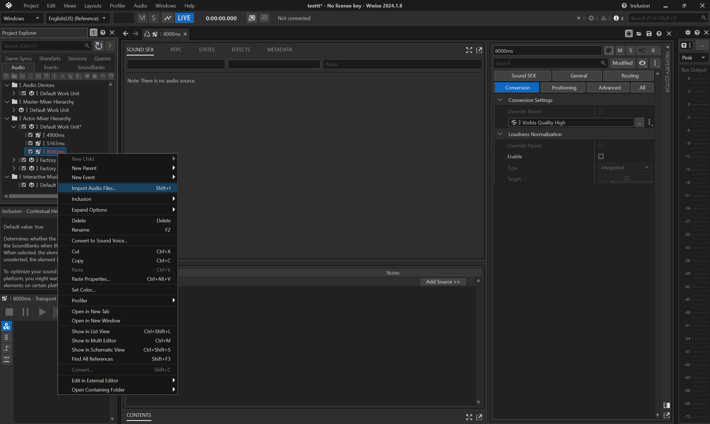 - don't forget to use
Sound SFX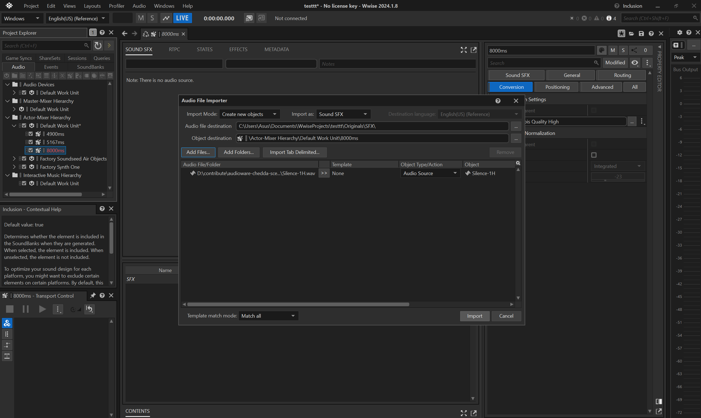 - if you need to do multiple silent
.wemof different durations, it is fine to reuse the same asset. 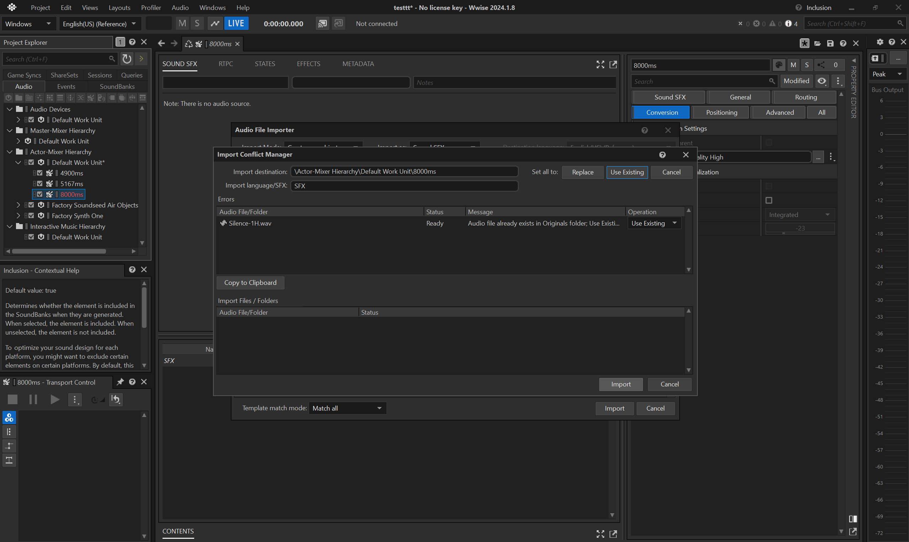 - then trim the audio, e.g. to
8seconds. 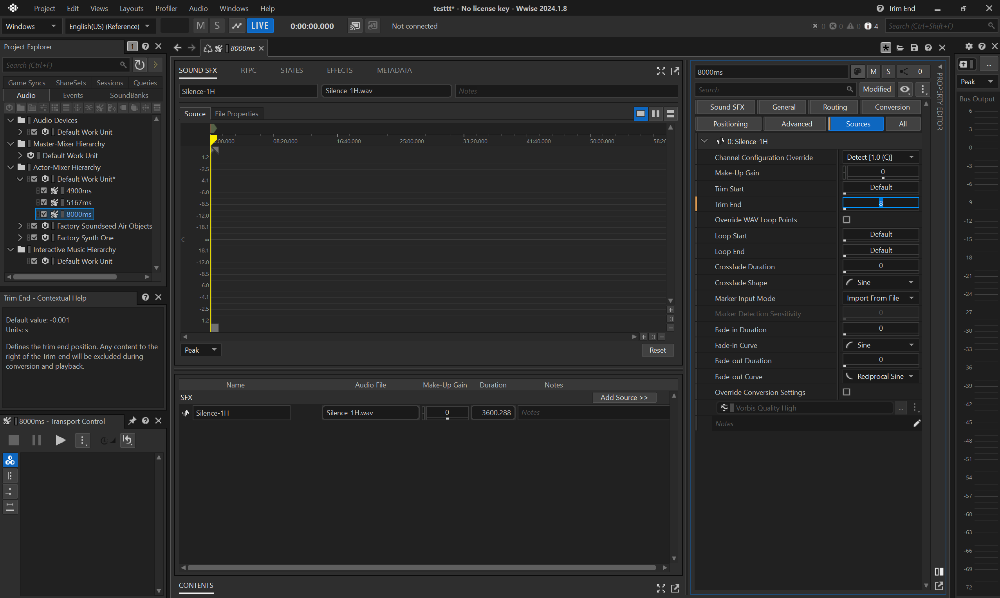 - before converting, make sure the
Conversion Settingsfor the container is set toVorbis Quality High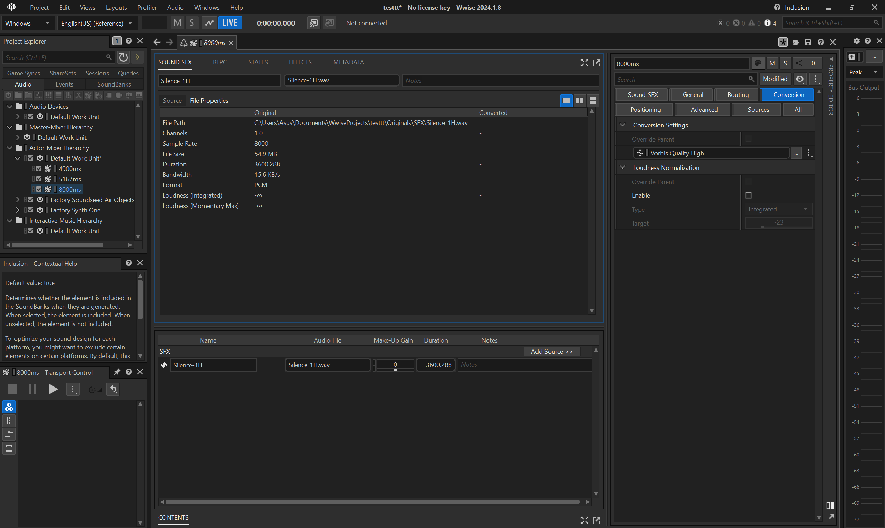 - convert the trimmed
.wavto.wem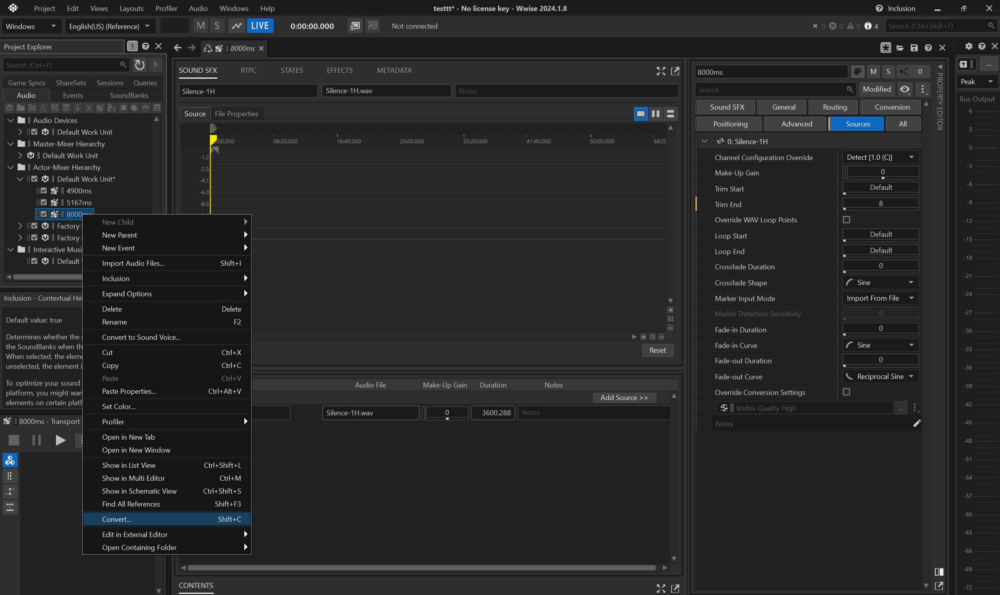 - copy the converted
.wemfrom Wwise cache (.cachefolder by default). Each asset is identified by its hexadecimal, so it's important to select the appropriate one, usually the latest. 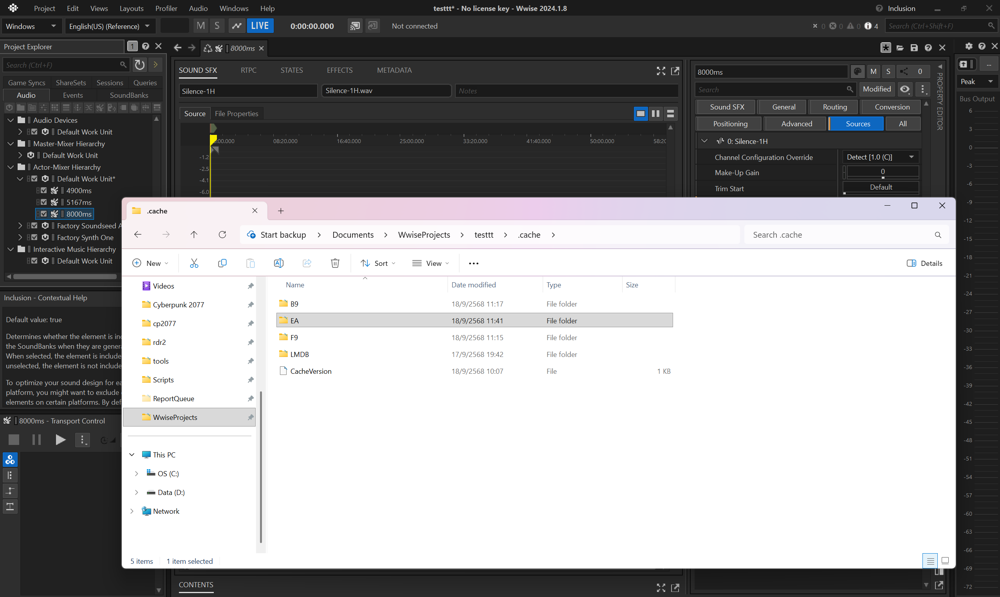 - finally paste it in your WolvenKit
archive.
voiceover map localization
Don't forget to register the .json in the .xl manifest:
# resources\audiowaredialogtest.archive.xl
# ...
localization:
# ...
vomaps:
en-us: mod\audiowaredialogtest\localization\en-us\vo\voiceovermap.json
string id variants map
Last but not least, there's an additional file which contains the duration (or length) of the string IDs.
If you browse vanilla files, you can find it under e.g. base\localization\en-us\stringidvariantlengthsreport.json.
At the time of writing ArchiveXL does not support creating custom ones just yet, so here's how you can do with Codeware instead:
class ATStringidVariantLengthsReportService extends ScriptableService {
private cb func OnLoad() {
GameInstance
.GetCallbackSystem()
.RegisterCallback(n"Resource/PostLoad", this, n"OnPostLoad")
.AddTarget(
ResourceTarget.Path(r"base\\localization\\en-us\\stringidvariantlengthsreport.json")
);
}
private cb func OnPostLoad(event: ref<ResourceEvent>) {
let resource: ref<JsonResource> = event.GetResource() as JsonResource;
let map: ref<locVoiceoverLengthMap> = resource.root as locVoiceoverLengthMap;
let panamline1: locVoLengthEntry;
panamline1.stringId = HashToCRUID(13159259729229609924ul);
panamline1.femaleLength = 4.9;
panamline1.maleLength = 4.9;
ArrayPush(map.entries, panamline1);
}
}
Showcase
And here's the result, thanks to MrBill for the .scene comparing:
| sentence | audio | lipsync |
|---|---|---|
| vanilla | vanilla wem | vanilla |
| vanilla | audioware mp3 | vanilla |
| modded | audioware mp3 | vanilla |
Overview
Ok, this was a mouthful!
Here's a quick schema summarizing the resources and their dependencies.
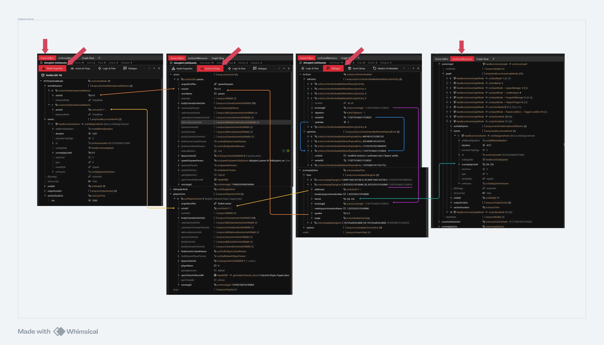
Big tokens of appreciation to MisterChedda, MrBill, DBK and Dedra without whom this feature would probably have never been finished!